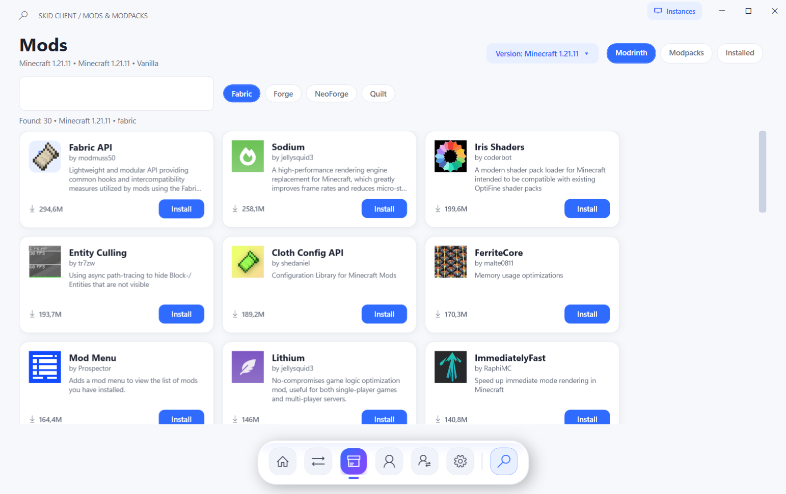
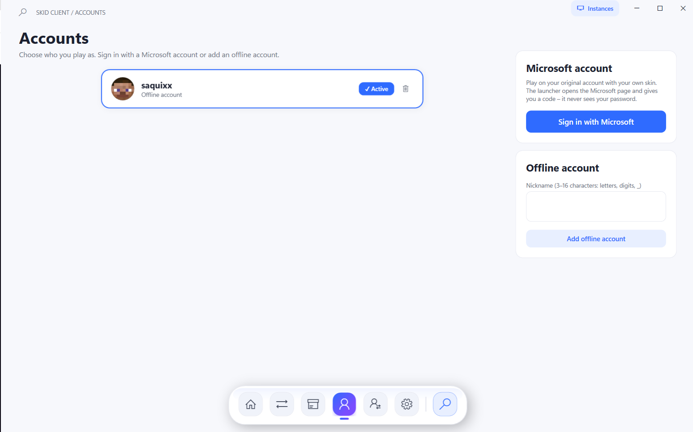

Everything you need to launch. Nothing you don't.
One click to play
Add a version, press Download, then Play. Java and game files download automatically.
Every loader
Pick the one your mods need.
FabricForgeNeoForgeQuilt
Mods built in
Search Modrinth without leaving the launcher and install into the version you choose.

Your account, your way
Sign in with Microsoft or add an offline account. The launcher never sees your password.
